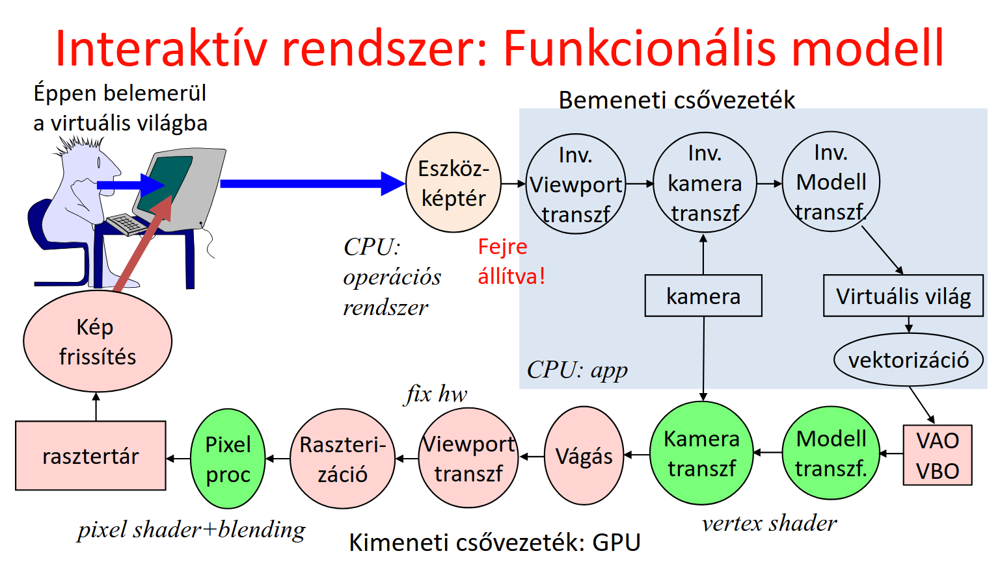
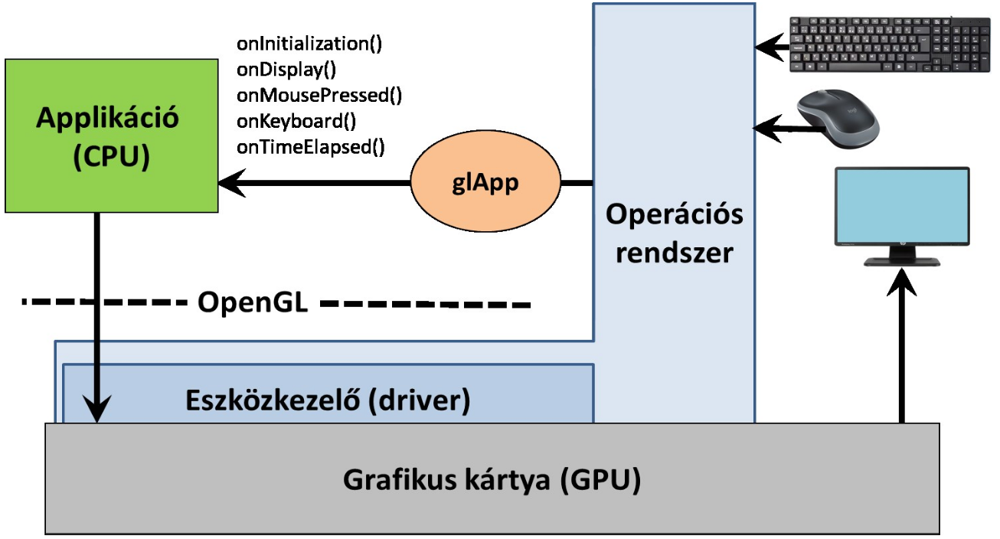
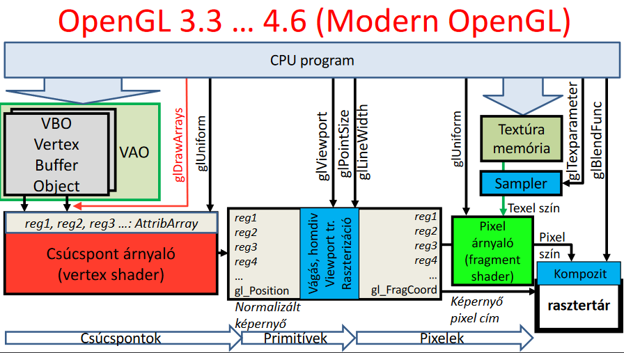
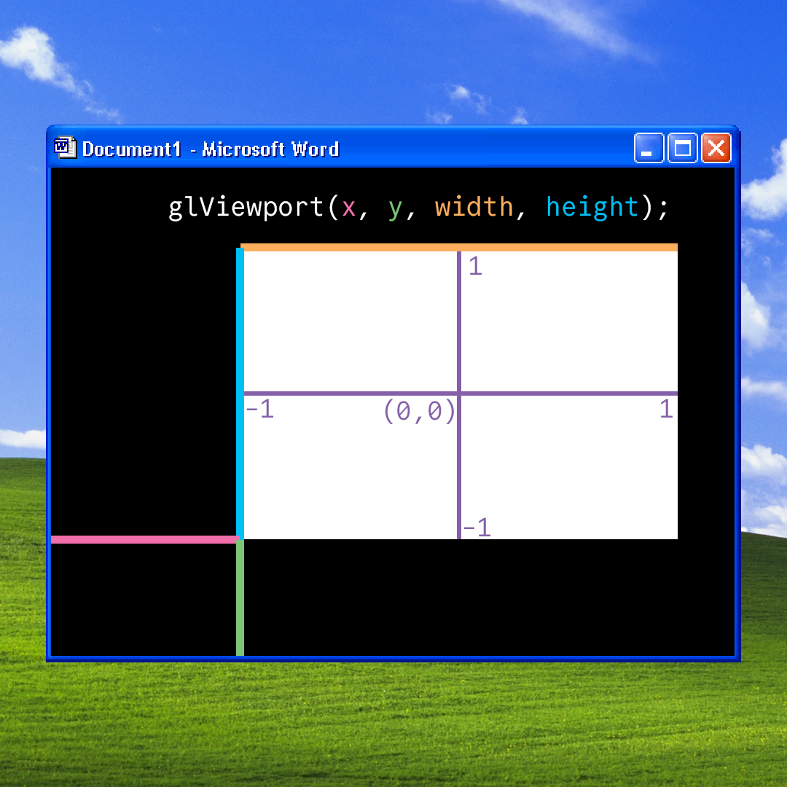
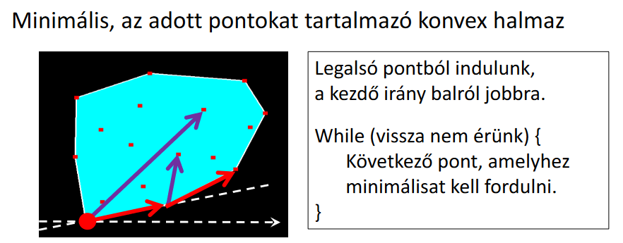
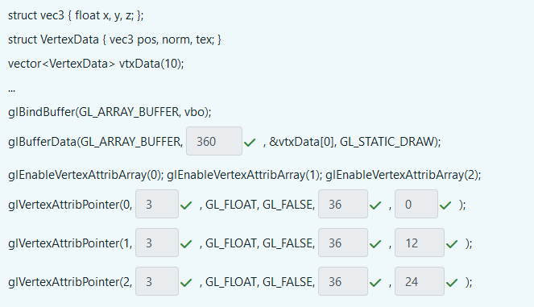

Grafikus hardver és szoftver
Funkcionális modell
A felhasználónak mutatunk egy virtuális világot, amivel interaktálni tud, és ennek hatásait láthatja is. Az alábbi grafikus csővezetékrendszer ezt mutatja be:

A CPU-ra megírt program (amit mi írunk pl. C++-ban) a bemeneti csővezetéket irányítja. A GPU műveletei közül, ami pirossal van jelölve, azokhoz "fix hardver implementáció" tartozik, azaz mi nem tudunk belenyúlni. A zölddel jelölt műveleteket viszont mi is befolyásolhatjuk, úgynevezett vertex és pixel shader-ek írásával (csúcspontárnyaló, képpontárnyaló).
A GPU csak pontokat, szakaszokat, és háromszögeket tud megjeleníteni. Minden ezekkel van közelítve, csak aprólékosan. A vektorizáció folyamán tetszőleges görbéket hozunk létre ezekből.
Szoftver architektúra

Az eseménykezeléshez glutot használunk. A main függvénybenben regisztrálunk eseménykezelőket (event handler, pl. onDisplay) és az operációs rendszer eseményeire a glut callback-ként fogja meghívni a saját függvényünket. Ez az ún. eseményvezérelt programozás.
OpenGL

Elemezzük a pipelinet:
- VBO (vertex buffer object): ebben tárolunk pontokat és a hozzá tartozó alakzatokat
- VAO (vertex array object): ebben több VBO-t tárolhatunk, a műveletek (transzformációk, vágás) ezen történnek.
Felmerülhet a kérdés, hogy hogyan éri meg a VBO-kat tárolni a VAO-ban? Több megközelítés lehet: csinálhatjuk például azt, hogy az egyik VBO csak a pontok koordinátáit tárolja el, a másik csak a pontok színeit, stb. Ezeket utána külön AttribArray-ekbe töltjük fel. Könnyebben kezelhető, hiszen a különböző adatok el vannak különítve, de nem túl hatékony. Egy másik lehetőség, hogy egy darab VBO van, és minden pont minden tulajdonsága ebben van. Egy picit bonyolultabb, mert egy pont adatai egymás mellett vannak, a tömb megfelelő "szeletelésre" (stride) és az értékek helyes "csúsztatására" (offset) nekünk kell odafigyelni, cserébe viszont lényegesebben hatékonyabb.
Bővebben a VBO/VAO-ról...
A VBO és VAO megértését segítő videó.
A glDrawArrays függvény juttatja el ezeket a VBO/VAO-kat a GPU-hoz. Ezek floating point regiszterekbe kerülnek. A vertex shader meghatározza a normalizált eszközkoordináta-rendszert (\((-1, -1)\) és \((1, 1)\) között). Ezután a gl_Position kimeneti regiszterben tárolja a normalizált eszközkoordinátákat, de további csúcspont tulajdonságokat is el tud tárolni egyéb regiszterekben, például színértéket.
A gl_Position-ben tárolt értékek mindig 4 dimenziósak lesznek és a 3D-s projektív geometriai szabályok szerint lesznek értelmezve.
Ezt követően fix műveleti egységek mennek végbe (vágás, raszterizáció, stb.). Ezek optimalizált hardver műveletek.
- Vágás: kidobjuk ami "nem látszik".
- Viewport transzformáció: A normalizált eszközkoordinátákból a képernyő koordináta-rendszerévé (\((0, 0)\) és pl. \((800, 600)\) között) való transzformálás.
- Raszterizáció: Egy adott háromszög csúcspontjai ismeretében meghatározza az összes olyan pixelt, ami benne van a háromszögben, interpolálja a regiszterek értékeit (pl. szín).
Ezeket követően már konkrét pixelekkel dolgozik a GPU. A fragment shader a pixelek tényleges színét határozza meg. Végezetül kompozitálás után a pixelek bekerülnek a rasztertárba (frame buffer), ahonnan már egyenesen a képernyőre kerülnek. A kompozitálás azért fontos, mert itt dől el, hogy melyik pixelek lennének más pixelek "mögött", ami az áttetszőség és a takarás kezeléséhez elengedhetetlen.
Primitívek
Tekintsünk tetszőleges pontokat a VAO-ban (jelöljük őket \(x_i\)-vel). Hogyan fogja ezeket a gl_DrawArrays függvény értelmezni? Nézzük meg először a függvény paramétereit:
glDrawArrays(primitiveType, startIdx, numOfElements);
A startIdx és numOfElements magukért beszélnek, viszont a primitiveType-ról részletesebben szót kell ejteni. Ez a jegyzet 7 darab ilyen primitívet tárgyal, ezek pedig:
GL_POINTS: külön pontokként jeleníti meg a VAO pontjaitGL_LINES: kettessével összeköti a megadott pontokat, így például az alábbi szakaszok jönnének létre: \((x_0, x_1), (x_2, x_3), ...\)GL_LINE_STRIP: az adott pontot mindig a következő ponttal köti össze: \((x_0, x_1), (x_1, x_2), (x_2, x_3), ...\)GL_LINE_LOOP: ugyan az mint aGL_LINE_STRIP, csak a legutolsó pontot a legelsővel is összekötiGL_TRIANGLES: minden három egymás utáni pont egy háromszög: \((x_0, x_1, x_2), (x_3, x_4, x_5), ...\)GL_TRIANGLE_STRIP: az utolsó pontot veszi hozzá az előző kettőhöz: \((x_0, x_1, x_2), (x_1, x_2, x_3), (x_2, x_3, x_4) ...\)GL_TRIANGLE_FAN: az első ponthoz veszi a legutóbbi kettőt: \((x_0, x_1, x_2), (x_0, x_3, x_4), (x_0, x_5, x_6) ...\)
Állapotgép jelleg
Az OpenGL egy állapotgép, azaz nem kell mindig minden függvénynek megadni minden paramétert, hanem ezeket "globálisan" beállítjuk, utána pedig a függvények ezekkel dolgoznak (például nem kell a pontok méretét megadni a glDrawArrays-ben, hanem a glPointSize függvénnyel beállítjuk ezt az értéket, utána pedig erre hivatkozik minden függvény).
Példa programok
A hivatalos ppt-kben található pár példa program, amelyeken keresztül láthatjuk az imént tárgyaltakat kódban is.
Input kezelése
Az operációs rendszer koordináta-rendszerének origója a bal felső sarokban van, tehát az \(y\) tengely fejjel lefelé van, "\(y\) lefele mutat". A glViewport viszont a bal alsó sarkot tekinti origónak, és az \(y\) tengely "felfele mutat". Valahogy így kell elképzelni:

Tehát ha a normalizált eszközkoordinátákat szeretnénk megmondani az ablak koordinátái alapján akkor:
ahol \(y_{\text{OpenGL}}\) már az OpenGL szerint értelmezett koordináta! Azaz ha az ablakunk például \(1000 \times 1000\) és az onMouse eseménykezelő szerint az egér \(y\) koordinátája \(267\), akkor \(y_{\text{OpenGL}} = 1000 - 267 - 1\).
Adatok feldolgozása
glEnableVertexAttribArray(0); // engedélyezi az írást ezekbe a regiszterekbe
// beállítja a regiszter tulajdonságait
glVertexAttribPointer(0, 3, GL_FLOAT, GL_FALSE, 0, NULL);
// Paraméterek: id, hány darab számot tárol, milyen típusú, isFixedPoint,
// stride, offset
// adatok feltöltése
glBufferData(GL_ARRAY_BUFFER, size_in_bytes, &startOfArray[0], GL_STATIC_DRAW);
// a mód lehet dinamikus is attól függően állítjuk, hogy gyakran cserélődik-e
// az adat
Az adatainkat uniform változókon keresztül is a GPU-hoz tudjuk juttatni. Ezek olyan változók, amik a CPU-ból (értsd: a C++ kódunkból) állíthatók a shader programban. Nem a pontok adatai közé tartoznak (pl. később az MVP matrix).
Uniformok a gyakorlatban
Uniformokra tekinthetünk úgy, mint a jelenleg aktív shader program "globális változói". Például van egy pixel shader programunk, amiben az éppen kirajzolandó pixel színét állítjuk be (tekintsünk el attól, hogy ezt shader nélkül is meg tudnánk oldani). A pixel shader program az éppen rajzolt alakzat minden pixelére le fog futni, viszont az alakzat színe és egyéb paraméterei eltérhetnek alakzatonként. Ahelyett, hogy a lehetséges paramétereket beleégetnénk a shader program kódjába, felvehetünk uniform változókat, amiket CPU oldalról tudunk állítani. Ekkor használhatjuk ugyan azt a shadert egy zöld és egy piros háromszög kirajzolásához is, csak a hozzá tartozó uniform paramétert kell megfelelően beállítani.
Általában a legtöbb objektumot kirajzolhatjuk ugyan azzal a programmal, csak néhány tulajdonságuk tér el, amiket uniform paraméterekkel meg tudunk adni. Vertex shadernek például az objektum transzformációs mátrixát tudjuk megadni, pixel shadereknek pedig az objektum textúráját, anyagának tulajdonságait stb.
Mi a megvalósításnál dupla bufferelést használtunk (két frame bufferünk van, a háttér bufferbe rajzolunk, a előtér buffert pedig a usernek mutatjuk és ezt a kettőt cserélgetjük, ezzel elkerülve az inkonzisztens/"félkész" képkockákat). Ezt a glutSwapBuffers(); függvényhívással értük el.
Konvex burok
Ezen a programon lett bemutatva az OpenGL használata

(ez nem az optimális algoritmus, de egészen használható)Kvíz
1. Hány háromszöget próbál kirajzoltatni az alábbi programsor?
glDrawArrays(GL_TRIANGLE_FAN, 5, 7);
Megoldás
Öt darabot (Első három pont alkot egy háromszöget, utána minden maradék pont egy újabb háromszöget eredményez.).
glDrawArrays(MODE, start, count) \(\Rightarrow\) az 5-ös rész csak azt jelenti, hogy az 5. től kezdve szeretnénk kirajzolni 7 pontnyit.
A GL_TRIANGLE_FAN az első 2 pontból még nem tud háromszöget rajzolni, úgyhogy csak a 3.-tól kezdve, viszont akkor minden új ponttal rajzol egy darab háromszöget
Vagyis 7-2 = 5 darabot tud rajzolni
{kind=link}
2. Az onMouse eseménykezelő egy eseményt kapott, amelyben az átadott koordináták \((916, 54)\) volt. Mi ennek a pontnak a normalizált eszközkoordináta-rendszerbeli \(y\) koordinátája, ha az alkalmazásablak felbontása \(1000 \times 1000\) az utolsó nézeti beállítás pedig a glViewport(100, 200, 800, 700) volt.
Kis segítség: glViewport(x, y, width, height), és a bal alsó sarokból veszi az offsetet, az egér viszont bal felülről számol.
Megoldás
1. Az egér koordinátáinak átalakítása OpenGL ablakkordinátákká
Az ablak felbontása \(1000 \times 1000\), ahol az egér \(y\) koordinátája \(54\) (az ablak felső sarkából számítva).
OpenGL-ben az \(y\) koordináta az ablak alsó sarkából indul, így az átváltás:
2. Normalizált koordináták számítása
A fenti képletbe helyettesítve:
3. Egészítsük ki egész számokkal az alábbi programot úgy, hogy a 10 elemű vtxData tömb teljes egészébe a VBO-ba másolódjon.
A pos adattag a csúcspont árnyaló 0. regiszterébe, a norm adattag az 1. regiszterébe, a tex adattag a 2. regiszterébe.

Magyarázat
Az elején a struktúrát megnézzük, akkor látjuk, hogy:
1 db vec3 az 3 float-ból
1 db VertexData az 3 vec3-ból áll
A \(360\) azért annyi, mert byte-okban kell megadni és egy float az 4 byte, vagyis \(4 \cdot 3 \cdot 3 \cdot 10\) byte lesz feltöltve.
A \(3\) azért annyi, mert egy vec3 valójában 3 floatból áll, a \(36\) az a VertexData mérete, az offset pedig szintén byte-ban az adat pozíciójának offset-je
4. Mik igazak a gl_Position regiszterre?
Ha 3D euklideszi geometriában dolgozik a vertex shader, akkor ide a Descartes koordinátákat kell írni kiegészítve a \(w=1\)-gyel
Az ebbe pakolt pont koordinátáit a GPU a 3D projektív geometria szabályai szerint értelmezi, azzal a megkötéssel, hogy a nemnegatív \(w\) koordinátájú pontokat tartja meg csak a vágás.
Megoldás
Első állítás: magyarázat picit korábban volt, de a lényeg annyi, hogy perspektív térábrázolásra van kitalálva a GPU, ezért érdemes úgy használni \(\implies\) gl_Position = (vp.x, vp.y, vp.z, 1))
Második állítás: ezt csak későbbi előadáson részleteztük, de érdemes megjegyezni, hogy ami nem látszik az le lesz vágva.
5. Az alábbiak közül melyik OpenGL programokkal befolyásolhatjuk a pixel shader program működését?
Megoldás
A glUniform - ez volt az egyetlen felsorolva, amire igaz volt.
6. Válasszuk ki az igaz állításokat. Feltételezzük, hogy a GPU háromszögeket dolgoz fel és a glDrawArrays(GL_TRIANGLES, 0, 30) OpenGL hívás hatására.
- Lehet olyan csúcspontárnyalót írni, amely esetén a GPU nem rajzol ki semmit a vbo tartalmától függetlenül
- A GPU csúcspont árnyaló programjában ki tudjuk számítani egy háromszög súlypontját.
- A csúcspontárnyaló dönthet arról, hogy a pontokat a háromszög csúcspontjaiként vagy háromszög legyezőként (
GL_TRIANGLE_FAN) értelmezze. - Ha a háromszög súlypontját a pixel árnyalóban számoljuk ki, akkor azt elég egyetlen pixelre, és az eredményt át lehet adni a többi pixel árnyalójának.
- A vágás során a primitív típusa (
GL_TRIANGLES) lényegtelen. - A GPU pixel árnyaló programja eldönti, hogy melyik pixelt színezze ki a kért színre.
Megoldás
- Lehet olyan csúcspontárnyalót írni, amely esetén a GPU nem rajzol ki semmit a vbo tartalmától függetlenül
- Magyarázat: Például:
void main() { gl_Position = vec4(0, 0, 0, 0); }
- Magyarázat: Például:
- A GPU csúcspont árnyaló programjában ki tudjuk számítani egy háromszög súlypontját.
- Magyarázat: Nem tudjuk, egyszerre mindig csak egy csúcsponttal foglalkozunk egy számítási egységen.
- A csúcspontárnyaló dönthet arról, hogy a pontokat a háromszög csúcspontjaiként vagy háromszög legyezőként (
GL_TRIANGLE_FAN) értelmezze.- Magyarázat: Nem, ezt mi állítjuk be. Az OpenGL állapotgép
- Ha a háromszög súlypontját a pixel árnyalóban számoljuk ki, akkor azt elég egyetlen pixelre, és az eredményt át lehet adni a többi pixel árnyalójának.
- Magyarázat: Nem így működik...
- A vágás során a primitív típusa (
GL_TRIANGLES) lényegtelen.- Magyarázat: Nem lényegtelen, mert ettől függ mit rajzolunk ki, és különböző alakzatokat különböző módon kell vágni
- A GPU pixel árnyaló programja eldönti, hogy melyik pixelt színezze ki a kért színre.
- Magyarázat: Az OpenGL egy állapotgép, nem "dönt" semmiről.
7. Válassza ki a helyes állításokat az OpenGL körrajzoló képességével kapcsolatban.
- Az OpenGL nem tud kört rajzolni, mert a művelet felesleges, hiszen a kör közelíthető szabályos sokszöggel.
- Az OpenGL nem tud kört rajzolni, mert a GPU fejlesztők nem ismerték a kör egyenletét.
- Az OpenGL nem tud kört rajzolni, mert projektív geometriában nincs távolság, ezért nincs kör sem, helyette keletek lehetnek, azok viszont túl bonyolultak lennének a vágás és raszterizáció hw. implementációjához.
- Az OpenGL nem tud kört rajzolni, hogy kitoljon a programozókkal.
- Az OpenGL-nek a kör középpontját és sugarát kell átadni, hogy ki tudja rajzolni.
Megoldás
- Az OpenGL nem tud kört rajzolni, mert a művelet felesleges, hiszen a kör közelíthető szabályos sokszöggel.
- Magyarázat: Lásd fentebb
- Az OpenGL nem tud kört rajzolni, mert a GPU fejlesztők nem ismerték a kör egyenletét.
- Magyarázat: Szerintem a \(8\) általánost elvégezték azért a GPU fejlesztők.
- Az OpenGL nem tud kört rajzolni, mert projektív geometriában nincs távolság, ezért nincs kör sem, helyette kúpszeletek lehetnek, azok viszont túl bonyolultak lennének a vágás és raszterizáció hw. implementációjához.
- Magyarázat: Projektív geometria nem egy metrikus tér, mivel nincsen távolság definiálva.
- Az OpenGL nem tud kört rajzolni, hogy kitoljon a programozókkal.
- Magyarázat: Néha olyan érzés, mintha igaz lenne...
- Az OpenGL-nek a kör középpontját és sugarát kell átadni, hogy ki tudja rajzolni.
- Magyarázat: Eleve nem tud kört rajzolni, tök mindegy, hogy mit adunk meg neki. Legfeljebb háromszögekkel közelíti.
8. Jelöljük be az alábbi programra vonatkozó igaz állításokat:
A 2024/2025/II. félévet követően feltehetően már nem kérdez rá erre, mert azóta más a framework.h
#include <windows.h>
#include <GL/glew.h>
#include <GL/freeglut.h>
void onDisplay(), onInitialization();
int main(int argc, char * argv[]) {
glutInit(&argc, argv);
glutInitContextVersion(3, 3);
glutInitWindowSize(600, 600);
glutInitWindowPosition(100, 100);
glutInitDisplayMode(GLUT_RGBA | GLUT_DOUBLE);
glutCreateWindow(“Hi Graphics");
glewExperimental = true;
glewInit();
glViewport(0, 0, 600, 600);
onInitialization();
glutDisplayFunc(onDisplay);
glutMainLoop();
return 1;
}
Megoldás
- Csak Microsoft Windows operációs rendszer alatt fordul le. (Hiszen
#include <windows.h>) - A rajzolás célterülete a teljes alkalmazó ablak. (Hiszen a viewportot teljesen kitöltjük, nincs offset)
- Egy pixelt 64 biten fog a hardver tárolni a rasztertárban (hiszen
glutInitDisplayMode(GLUT_RGBA | GLUT_DOUBLE);emiatt 2 buffer, 4 channel, 8 bit / szín \(\Rightarrow 2 \cdot 4 \cdot 8 = 64\)). - Egyetlen sor törlésével a program Unix alatt is fordíthatóvá válik. (A kérdéses sor a
#include <windows.h>) - Ha Visual Studio-t használunk, akkor semmit sem kell installálni és a Web-ről letölteni, hogy leforduljon.
- A nézeti téglalap \(100 \times 100\) pixelből áll.
- A
glutCreateWindowután hívhatunk OpenGL függvényeket. (nem, csak akkor hívhatóak, ha inicializáltuk az OpenGL-t, ami azonInitialization-ban történik a framework-ben) - Hibás, hogy az
opengl.hnincs beincludeolva. (nem hibás, mert ezért van nekünk a glew könyvtár - ez segít eldönteni, hogy az OpenGL melyik verzióját vagyunk képesek használni) - Ez OpenGL 3.0-ás verzióra készül fel. (nem, a glew eldönti)
- Ez OpenGL 1.0-ás verzióra készül fel. (nem, a glew eldönti)
9. Az alábbi program szándéka szerint egy zöld háromszöget rajzolna ki \(\varphi\) radiánnal elforgatva, de nem működik. Mely sorokban van hiba?
A 2024/2025/II. félévet követően feltehetően már nem kérdez rá erre, mert azóta más a framework.h
void onDisplay( ) {
glClearColor(0, 0, 0, 0); glClear(GL_COLOR_BUFFER_BIT);
int location = glGetUniformLocation(shaderProgram, "color");
glUniform3f(location, vec3(0.0f, 1.0f, 0.0f));
float MVPtransf[4][4] = {
cos(phi), sin(phi), 0, 0,
-sin(phi), cos(phi), 0, 0,
0, 0, 0, 0,
0, 0, 0, 1
};
location = glGetUniformLocation(shaderProgram, "MVP");
glUniformMatrix4fv(location, 1, GL_FALSE, &MVPtransf[0][0]);
glBindVertexArray(vao);
glDrawArrays(GL_TRIANGLES, 1, 3 );
glutSwapBuffers( );
}
Megoldás
glUniform3f(location, vec3(0.0f, 1.0f, 0.0f));- Hiba: \(3\)
floatváltozót vár paraméternek
- Hiba: \(3\)
glUniformMatrix4fv(location, 1, GL_FALSE, &MVPtransf[0][0]);- Hiba: A mátrix a kódban sorfolytonos formában van megadva, de az OpenGL alapértelmezetten oszlopfolytonos mátrixokat vár. Ahhoz, hogy a mátrixunk helyesen töltődjön fel, a transzponálást jelző paraméternek
GL_TRUE-nak kellene lennie.
- Hiba: A mátrix a kódban sorfolytonos formában van megadva, de az OpenGL alapértelmezetten oszlopfolytonos mátrixokat vár. Ahhoz, hogy a mátrixunk helyesen töltődjön fel, a transzponálást jelző paraméternek
glDrawArrays(GL_TRIANGLES, 1, 3 );- Hiba: Ez a hívás \(3\) csúcspontot dolgoz fel az 1-es indextől kezdve, ami egyetlen háromszöget (az {1, 2, 3} csúcsokból) rajzol ki. Ez nem feltétlenül hiba, de ha a VBO-ban lévő első háromszöget ({0, 1, 2}) szeretnénk kirajzolni, a helyes hívás
glDrawArrays(GL_TRIANGLES, 0, 3)lenne.
- Hiba: Ez a hívás \(3\) csúcspontot dolgoz fel az 1-es indextől kezdve, ami egyetlen háromszöget (az {1, 2, 3} csúcsokból) rajzol ki. Ez nem feltétlenül hiba, de ha a VBO-ban lévő első háromszöget ({0, 1, 2}) szeretnénk kirajzolni, a helyes hívás
10. Mely könyvtárak szükségesek feltétlenül, azaz nem csupán opcionálisak, az GPU OpenGL könyvtáron keresztüli programozásához?
Megoldás
OpenGL (nincs további helyes opció)
11. Hány csúcspontot fog tartalmazni az alábbi VBO?
unsigned int vbo;
glGenBuffers(1, &vbo);
glBindBuffer(GL_ARRAY_BUFFER, vbo);
double vertices[] = {1, 2, 3, 4, 5, 6, 7, 8};
glBufferData(GL_ARRAY_BUFFER, sizeof(vertices), vertices, GL_STATIC_DRAW);
glEnableVertexAttribArray(0); // AttribArray 0
glVertexAttribPointer(0, 1, GL_FLOAT, GL_FALSE, 0, NULL);
Megoldás
\(16\), mert nagyon trükkösen double arraybe lettek pakolva a pontok, de float-ként lesznek feltöltve. Mivel a double kétszer annyi helyet használ fel, mint a float, ezért 16 float-nyi helyet fognak elfoglalni.